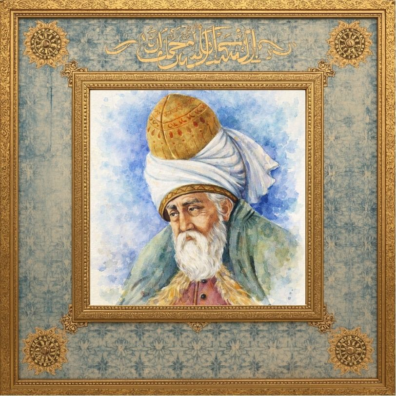

Ehl-i Kalem / Tasavvuf Dünyası
"Sen benim bu alemde ünümü duymadın mı hiç? Ben bir hiçim, hiç!"
Mevlânâ Celâleddîn-i Rûmî (1207 – 1273), tasavvuf dünyasının ve Türk-İslam kültürünün en parlak irfan abidelerindendir. Mesnevî'nin girişinde adını Muhammed b. Muhammed b. Hüseyin el-Belhî diye kaydetmiştir. Lakabı Celâleddin, unvanı ise onu yüceltmek maksadıyla söylenen ve "Efendimiz" anlamına gelen "Mevlânâ"dır. Babası tarafından kendisine "Sultan" anlamına gelen Farsça "Hudâvendigâr" unvanı da verilmiştir. Doğduğu şehre nisbetle Belhî, ömrünü geçirdiği Anadolu'ya (Diyar-ı Rum) nisbetle ise Rûmî, Mevlânâ-i Rûm veya müderrisliği sebebiyle Molla Hünkâr unvanlarıyla zikredilmiştir. 30 Eylül 1207'de eski bir büyük Türk kültür merkezi olan Belh'te (bugünkü Afganistan) doğmuştur.
Asil bir aileye mensup olan Mevlânâ'nın annesi, Belh Emiri Rükneddin'in kızı Mümine Hatun; babaannesi ise Harezmşahlar hanedanından Türk prensesi, Melike-i Cihan Emetullah Sultan'dır. Babası, devrinde "Sultânü'l-Ulemâ" (Alimlerin Sultanı) unvanı ile tanınmış bilge Muhammed Bahaeddîn Veled; büyükbabası ise ilmi deniz gibi engin olan ulu alim Hüseyin Hatibi'dir. Mevlânâ'nın nesebinin anne cihetiyle Hz. Hüseyin'e, baba cihetiyle ise Hz. Ebu Bekir'e ulaştığı kabul edilir.
Babası Bahaeddîn Veled, 1150'de Belh'te doğmuş, manevi ilimlerin yanı sıra Necmeddîn-i Kübrâ gibi büyük mutasavvıflardan feyz almıştır. Bahaeddîn Veled, Horasan diyarının en zor fetvalarını çözen tek üstadıydı ve vakıf gelirlerinden hiçbir pay almayıp hazineden tahsis edilen maaşla geçinirdi. Sabah namazı sonrasında ders verir, öğleden sonra dostlarıyla sohbet eder ve pazartesi günleri halka vaaz ederdi. Yunan filozoflarının akılcı fikirlerini benimseyenlerin görüşlerini reddeder, Fahreddîn-i Râzî ve ona uyan Harezmşah'ın felsefi tutumlarına karşı çıkarak "Muhammed Mustafa'nın yürüyüşünden dahi iyi yürüyüş, yolundan daha doğru bir yol görmedim" derdi.
Fahreddîn-i Râzî'nin bu aleyhtar duruşu Harezmşah sarayında kışkırtması sonucu Bahaeddîn Veled'in gönlü kırılmış ve ailesiyle birlikte Belh'i terk etmiştir. Bu göçün bir diğer temel sebebi de yaklaşmakta olan yıkıcı Moğol istilasıdır. Uzun bir yolculuğun ardından Nişabur, Bağdat ve Hicaz rotasını izleyen aile, nihayet Selçuklu başkenti Konya'ya gelmiş ve burayı ebedi yurt edinmiştir. Mevlânâ, Konya'da Şems-i Tebrîzî ile karşılaşarak ilahi aşkın ateşinde yanmış, bilgeliğini şiirle birleştirerek dünyaya ölümsüz eserler sunmuştur.

Edebi Miras
Tasavvuf felsefesinin başyapıtıdır. 26 binden fazla beyitten oluşan bu anıtsal eser, insani ve ilahi değerleri, ahlaki hikâyeler ve kıssalar eşliğinde derinlemesine işler.
Şems-i Tebrîzî'nin anısına atfedilen, coşkun gazellerin ve rubailerin toplandığı eseridir. İlahi aşkın en lirik, engin ve tutkulu ifadelerini barındırır.
"Onun içindeki içindedir" anlamına gelen bu nesir eser, Mevlânâ'nın meclislerindeki sohbetlerinin, dini ve felsefi görüşlerinin derlendiği eşsiz bir kaynaktır.
Dönemin yöneticilerine yazılan 147 mektup (Mektûbât) ve Mevlânâ'nın minberde irat ettiği yedi vaazı (Mecâlis-i Seb'a) barındıran nesir külliyatıdır.
Gönüllerden Süzülenler